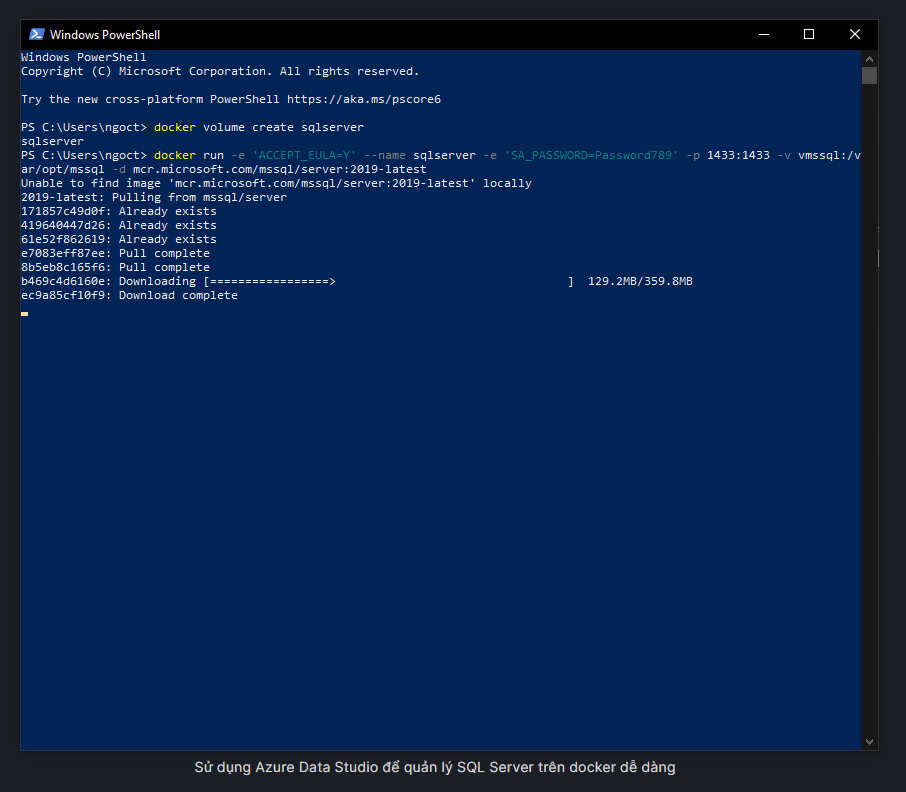
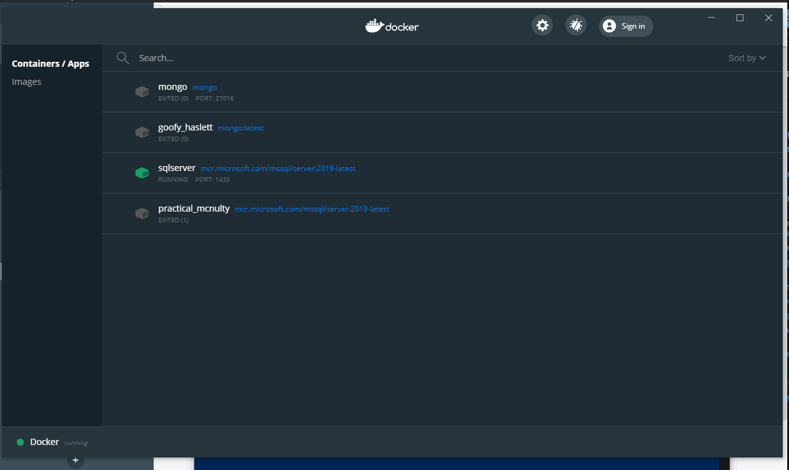

Các bài lab thực hành
Hệ quản trị cơ sở dữ liệu
Lab 04: Tải và cài đặt SQL server trên Docker
• Tải và cài đặt SQL server trên docker.
• Đầu tiên ta phải tạo volume để chứa ánh xạ
docker volume create sqlserver
• Tiếp theo tạo/chạy container với lệnh sau:
docker run -e 'ACCEPT_EULA=Y' --name sqlserver -e 'SA_PASSWORD=Password789' -p 1433:1433 -v vmssql:/var/opt/mssql -d mcr.microsoft.com/mssql/server:2019-latest
• Để sử dụng SQL server trên terminal
docker exec -it -sqlserver bash
• Thực hiện kết nối SQL Server
/opt/mssql-tools/bin/sqlcmd -S localhost -U SA -P 'Password789'
• Sau khi cài đặt hoàn tất sẽ có container SQLServer
